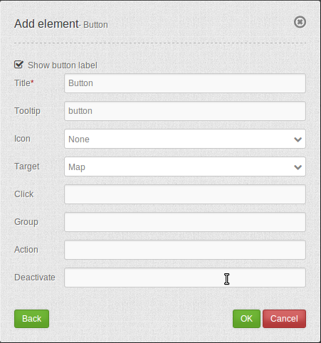

Button¶
The button element provides a push button widget. Some elements like Legend , Layertree, FeatureInfo, Line/Area Ruler and PrintClient need a button to be displayed/activated if not defined in a frame.
Buttons optionally can be grouped, so that only one button in a group can be active at any given time. This is done by the group paramter. You can define a button that refers to a website or script using the click paramter.
Configuration¶
{kind=link}
- Show label: Enable or disable text (title) next to the button.
- Title: Title of the element. The title will be listed in “Layouts” and allows to distinguish between different buttons. It will be indicated if “Show label” is activated.
- Tooltip: Text, that will be indicated if the mouse hovers over the button for a longer time.
- Icon: Symbol of the button. Based on a CSS class.
- Target: Target element (Title(ID)) of the button. The target element will be triggered by clicking on the button. (e.g.: Print).
- Click: Refers to a website or a script (e.g.: http://mapbender3.org).
- Group: Adds the element to a group. Only one button of the group may be activated.
- Action: Method that is invoked when the button is activated.
- Deactivate: Method that is invoked when the button is disabled.
Icons¶
For some symbols you can choose between two different types of icons:
- A symbol based on a graphic (e.g. “About”),
- A symbol based on a font (e.g. “About (Font Awesome)”).
The latter are based on a IconSet, which is delivered with Mapbender as a module. We recommend to use the symbols from this library.
More information on that topic:
YAML-Definition:¶
title: # title
tooltip: # text to use as tooltip
icon: ~ # icon CSS class to use
label: true # false/true to label the button, default is true
target: ~ # title (Id) of target element
click: # refer to a website or script like http://mapbender3.org
group: ~ # group to put the button into. Only one button per group can be active
action: ~ # method of target to call when button is activated
deactivate: ~ # method of target to call when button is deactivated
Class, Widget & Style¶
- Class: Mapbender\CoreBundle\Element\Button
- Widget: mapbender.mbButton (mapbender.element.button.js)
- Style: mapbender.elements.css
HTTP Callbacks¶
None.
JavaScript API¶
activate¶
Activates button. Gets called on click if button is deactivated.
deactivate¶
Deactivates button. Gets called on click if button is active or when another button of the same group gets activated.
JavaScript Signals¶
None.